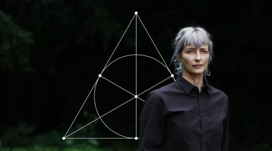

如果你想到了一个新点子，那么这个世界上一定有人比你先想出来，并且已经付诸了行动
附新闻链接：只有八维数字，才能还原宇宙的本质？
2018年08月07日 09:53 新浪科技综合
来源：环球科学ScientificAmerican
 Susannah Ireland 拍摄的 Cohl Furey
补充说明，对这位何呵呵的内涵段子，我发了两条「不惮以最大的恶意揣测」。但是到现在一个小时过去了，只有第一条「民族企业负面新闻」显示出来，第二条涉及亡我之心不死的帝国主义雌性物理学家的内容居然没有「通过审核」，奇哉。
只能说，煎蛋站方知道孰轻孰重，分得清主要矛盾和次要矛盾。前者不过是赚几个零花钱，后者则可以忽悠全球傻哔大造特造「宏大叙事加速器」「史无前例对撞机」，动辄持续几十年，预算总计上万亿。所以，要留着明面上的幌子吸引火力，即便是马化腾这种级别的「互联网大佬」，也是被豪门贵种走兽派随意扔出来的幌子而已。
总之，没有依附甚至孕育过「贵种」的雌性物理学家就没有诺贝尔物理奖或菲尔兹奖，只有依附甚至孕育过「贵种」的雌性物理学家才能救物理，只有依附甚至孕育过「贵种」的雌性物理学家才能发展物理，依附甚至孕育过「贵种」的雌性物理学家钦定「武德充沛」「天命昭昭」，凡是不肯「路径依赖」于这位阿姨的家伙，那是人缘差情商低不识大体不顾大局不懂政治不讲规矩不守纪律的历史唯物主义の尘埃，一律「费拉不堪」被历史の五对负重轮碾为齑粉。
至于「复制且成功」，小意思。诡辩唯物主义物理学家会指使信仰诡辩唯物主义的狼牙棒一力降十会：你有唯物主义证据么？
正好可以对照紧接着的一个内涵段子：「煎蛋普法小课堂」